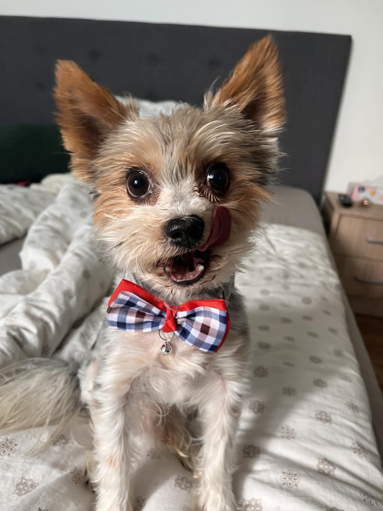
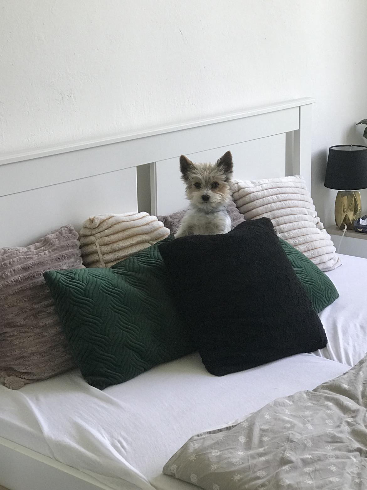
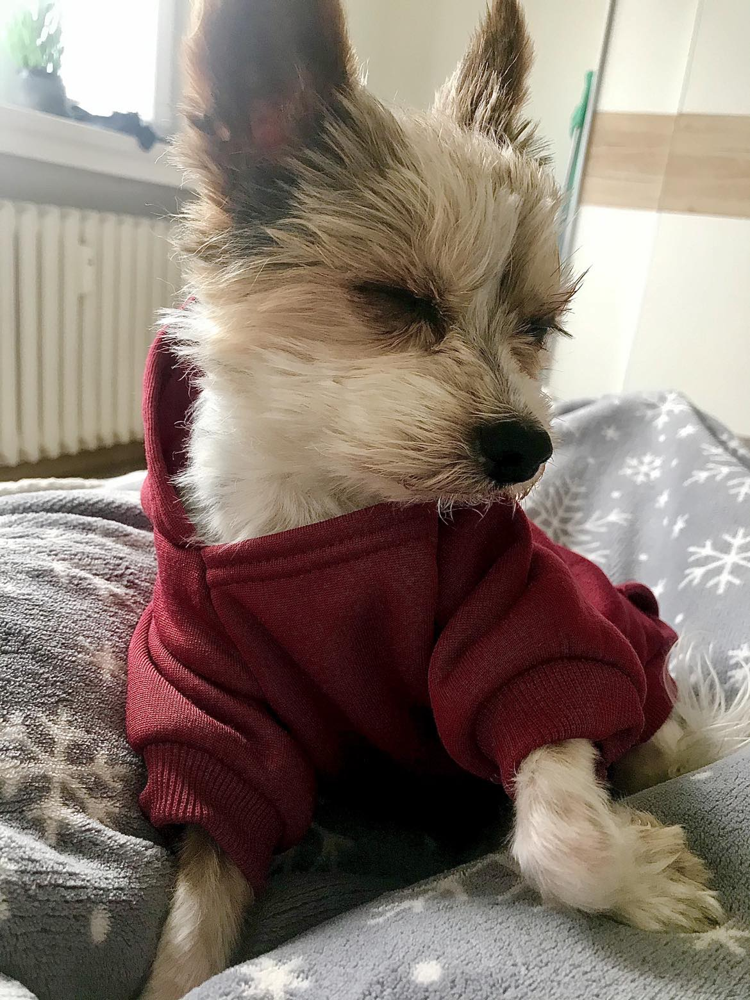
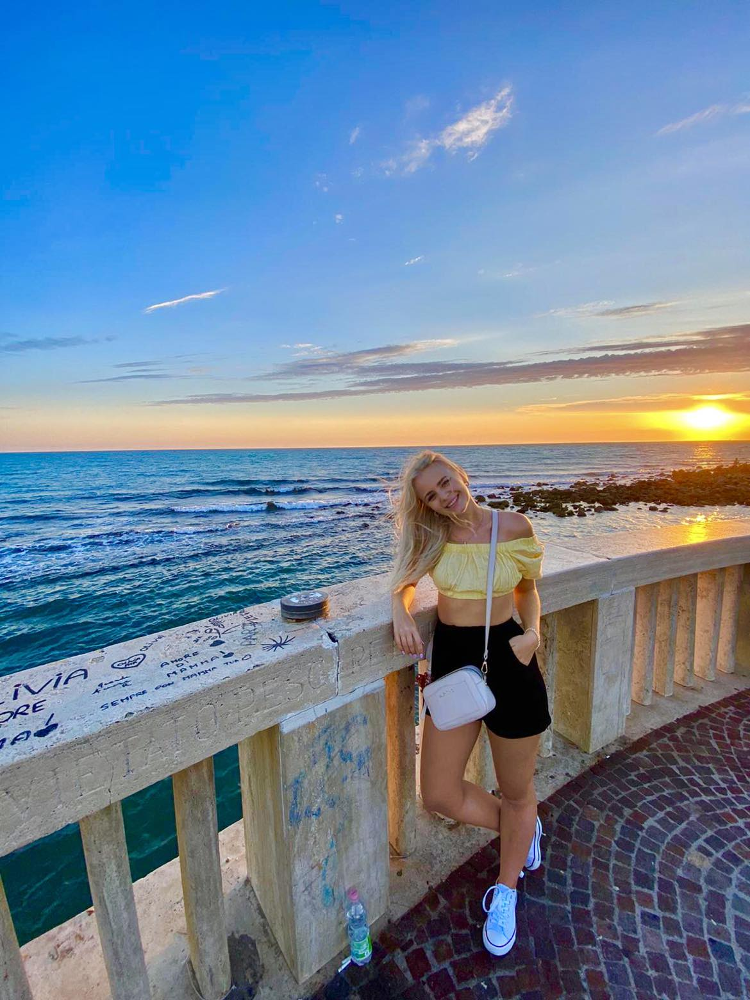
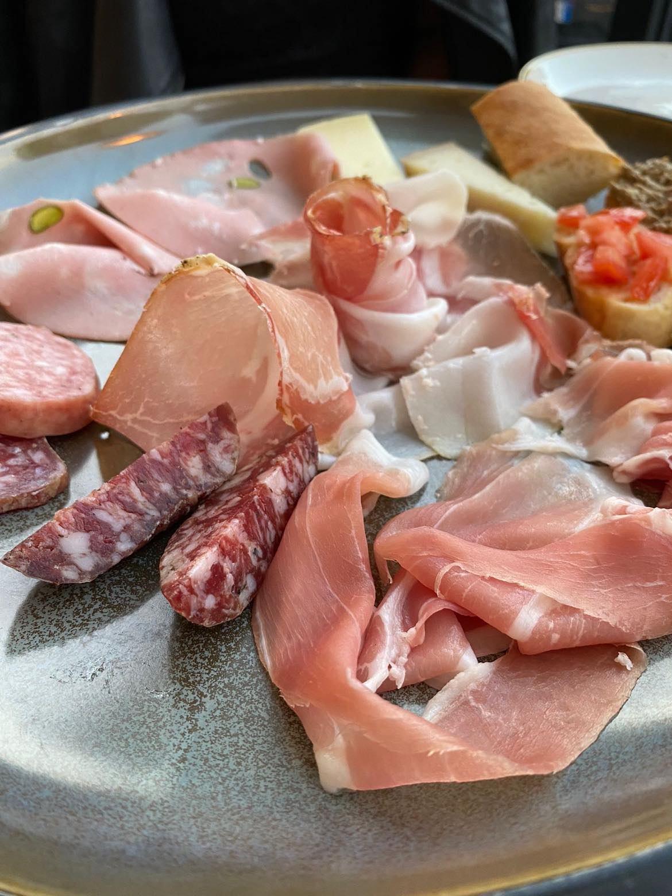

O mně
 Ahoj 🌸
Ahoj 🌸
Jmenuji se Michaela Brodová a jsem původem z Ostravy, ale nyní už víc jak rok žiji ve Zlíně. Pracuji nyní jako softwarový inženýr. Chtěla jsem být chemičkou či doktorkou, ale život mě zavedl jinam. Momentálně se věnuji implementací nových virtuálních serverů. Beru to jako skvělou zkušenost a jedinečnou možnost vstupu do IT světa. Momentálně se ale snažím přijít na něco co mě bude bavit více 👩🏼💻.
Když se zrovna neučím něco nového, tak nejvíce času trávím se svým psem Teddym, parťákem, který to se mnou táhne už 7 let. Když se zrovna nepřetahujeme o hračku, ráda si čtu, starám se o květiny, medituju nebo si zajdu zacvičit.
Cesta do minulosti
Do mých 6 let jsem vyrůstala na rodinném domě kousek za Ostravou v obci Stará Bělá. Chovali jsme tam králíky 🐇 a celé dny trávili venku. ☀️


S nástupem do školy jsme se přestěhovali do Ostravy, opustili jsme dům a šli žít městký život.
Pak už to šlo rychle, základka ✅, gympl ✅, maturita z chemie a biologie ✅, vysoká škola ❌. Po neúspěchu na vysoké škole jsem začala pracovat jako technik pro TietoEvry a tam jsem doteď.
Můj parťák
🐶



Moji neodmyslitelnou součástí je můj pes. Táhne to se mnou už 7 let, v dobrém i ve zlém.
Teddy je Biewer terirér, ale nikdo nám to moc nevěří. Jeho oblíbenou aktivitou je spánek, proto má většinu fotek z postele 💤. Mohl by vás zmást jeho tvrďácky výraz, ale Teddy je to nejhodnější stvoření 💚.
Střípky z mého života
Ráda bych se s Vámi podělila o poslední dovolenou, na které jsme byli.
Jak to celé začalo

Rozhodli jsme se pro dovolenou v Itáli, otázkou však bylo, do jakého města pojedeme. Protože jsme jeli bez cestovní kanceláře, mohli jsme si celý tento výlet naplánovat podle sebe. Objednali jsme letenky do Říma s tím, že konečnou destinaci najdeme později. Koukali jsme na netu na nějaké známější italská města, ale nic co by nás okouzlilo. Do doby než jsme našli zmínku o historickém městečku zvaném Orvieto 💕.

Orvieto nás okouzlilo. Ihned jsme našli přes airbnb ubytování a nemohli se dočkat než dovolená začne. Po příletu do Říma jsme sedli na vlak a jeli asi 2 hodiny na sever do našeho vysněného cíle.
Byli jsme ohromeni 🤩. Orvieto je malé město na které se dostane lanovkou, neb leží na skále.


Jak to pokračovalo
Orvieto jsme prošli křížem krážem nejméně 3x. Každý den jsme si užívali italskou atmosféru, pili espressa, jedli pastu, pizzu a ohromné množsví gelata 🍨.
Kontakt

Michaela Brodová
Zlín - Mladcová
76001
Napište mi na E-mail